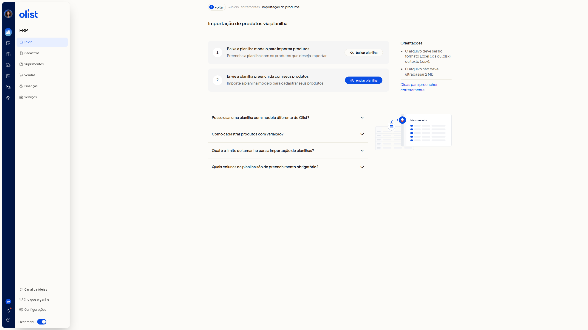
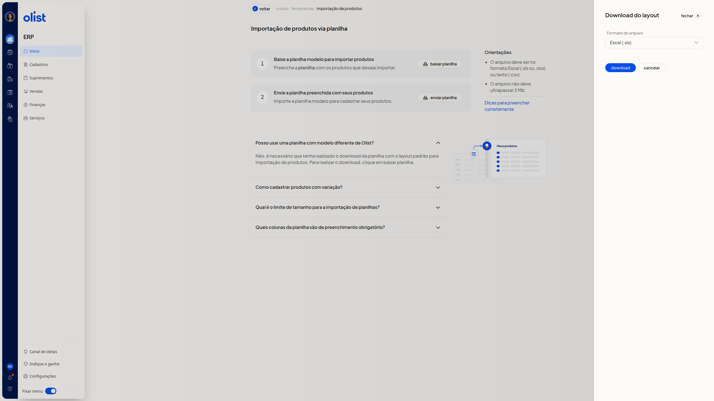

Importar planilha de produtos
Descrição
A importação de produtos via planilha cadastra produtos no ERP da Olist a partir do layout padrão. Na página Importação de produtos via planilha, você baixa a planilha, preenche os produtos e envia o arquivo.
Acesse início > ferramentas > importação de produtos.
Pré-requisitos
- Você precisa da permissão de produtos para acessar a importação de produtos via planilha.
- Se você não é de suporte, também precisa da permissão de importação de registros e da permissão para incluir e editar produtos.
- Use a planilha de layout padrão baixada em baixar planilha. Um modelo diferente não serve.
- O arquivo deve ser Excel (.xls ou.xlsx) ou texto (.csv), ter até 500 registros, conter ao menos uma linha de dados e não ultrapassar 2 Mb.
- Preencha as colunas Descrição, Sob Encomenda e Situação.
Com isso, baixe a planilha modelo e preencha os produtos.
Instruções
Importante: não altere o nome das colunas nem a ordem do cabeçalho. Não exclua colunas: deixe a célula em branco. Use termos padronizados.
Conferir as orientações
-
Leia o bloco Orientações. O arquivo deve ser Excel (.xls ou.xlsx) ou texto (.csv) e não deve ultrapassar 2 Mb.

Baixar a planilha modelo
-
No passo Baixe a planilha modelo para importar produtos, clique em baixar planilha.
-
No painel Download do layout, no campo Formato do arquivo, escolha Excel (.xls) ou Texto (.csv). O campo não é obrigatório e Excel (.xls) já vem selecionado.

-
Clique em download para obter o arquivo. Para fechar o painel sem baixar, clique em cancelar ou em fechar, no cabeçalho.
Preencher a planilha
Preencha a planilha com os produtos que deseja importar.
- Em Situação, informe Ativo ou Inativo.
- Em Sob Encomenda, informe Sim ou Não.
- Deixe ID em branco para produto novo. Para atualizar um produto, informe o ID já existente.
- Para NF-e, preencha Unidade, NCM com 8 dígitos e Origem com o número ou a descrição oficial (códigos 0 a 8).
- Em imagens, informe até 10 URLs diretas, com extensão.jpg,.png,.webp ou.jpeg. Links de nuvem não são aceitos.
- As colunas de Imagem 1 a 6 armazenam a foto. Imagem Externa 7 a 10 apenas guardam o link.
- Para produto com variação, siga a pergunta frequente Como cadastrar produtos com variação.
Enviar a planilha preenchida
- No passo Envie a planilha preenchida com seus produtos, clique em enviar planilha e escolha o arquivo no computador. Se houver itens que bloqueiam a importação, corrija a planilha e envie de novo. Só arquivos 100% corretos são processados.
Perguntas frequentes
Posso usar uma planilha com modelo diferente de Olist?
Use a planilha com o layout padrão, baixada em baixar planilha. Um modelo diferente não serve.
Como cadastrar produtos com variação?
No pai, preencha os dados e informe V em Tipo de Produto. No filho, informe S em Tipo de Produto, o código do pai em Código do Pai e as características em Variações, no modelo Tamanho:GG||Cor:Branco.
Qual é o limite de tamanho para a importação de planilhas?
O arquivo deve ter até 500 registros e não deve ultrapassar 2 Mb.
Quais colunas da planilha são de preenchimento obrigatório?
Descrição, Sob Encomenda e Situação.
Links relacionados
Se precisar de ajuda para concluir a importação, fale com o suporte.